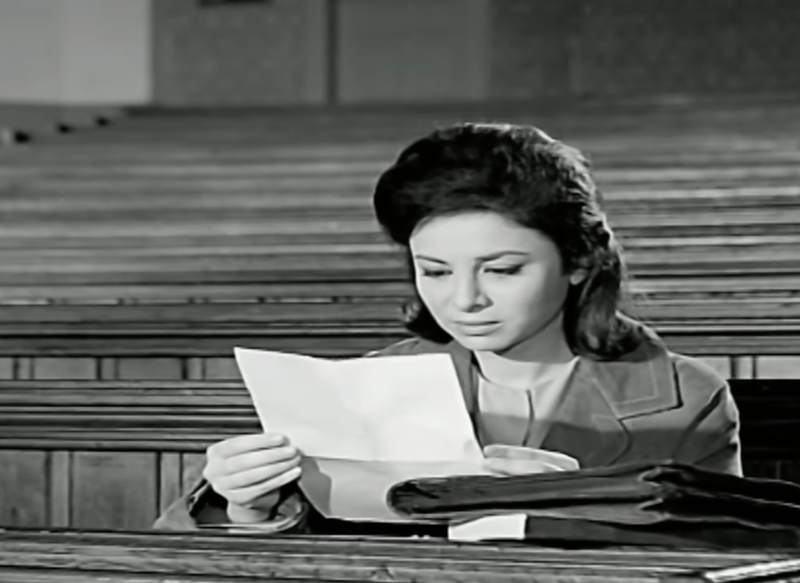
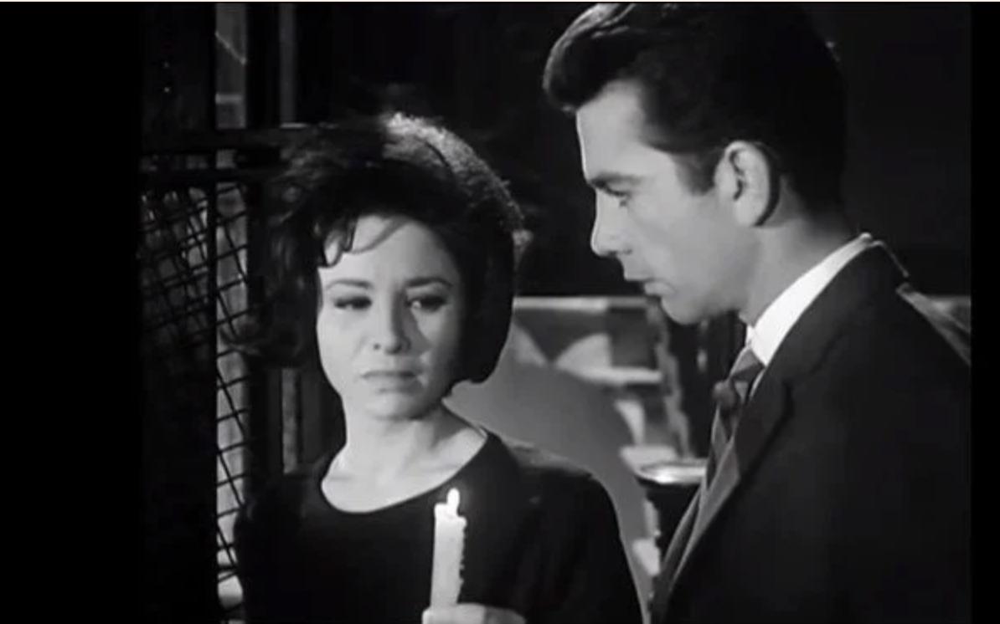

Still from Henry Barakat's Al-Bab al-Maftouh (The Open Door, 1963)
In his profoundly insightful article on Faten Hamama and "Egyptian difference" in film, Paul Sedra points out something astonishingly true and little celebrated when it comes to Egyptian cinema: the fact that, unlike its American and even European counterparts, Egyptian cinema came into its own in the mid-1960s with films that were probably more sensitive to the times than those produced nearly anywhere else, with the exception of Indian cinema, particularly the films of Satyajit Ray.
The mid-1960s were rife with political change across the globe. Let's take 1963 as an example. In the United States, it was a seminal year for the civil rights movement: the March on Washington took place, Medgar Evers was assassinated and Malcolm X delivered his historic "Message to the Grassroots" speech in Detroit. It was also a big year for feminism: the US witnessed the publication of Betty Friedan's the Feminine Mystique, and also the release of the Presidential Commission on the Status of Women report, in Iran women were granted the right to vote, while the Russian Valentina Tereshkova became the first woman to venture into space. Yet, looking back at the cinematic works made during that year, one cannot sense the urgency nor the political foment of the time.
On the other hand, 1963 was a big year for Egyptian film: it marked the release of Youssef Chahine's Al-Nasser Salah al-Din (Saladin the Victorious), Hassan al-Imam's Zuqaq al-Midaq (Midaq Alley), Hossam al-Din Mustafa's Al-Nathara al-Sawdaa (Black Shades) and Mahmoud Thulfiqar's Al-Ayde al-Naema (Soft Hands). Almost all of these films had women in central roles, and showed them contending with the new reality of the post-independence state riding high on the dream of unity, progress and prosperity. But postcolonial politics and propaganda aside, in a rare moment of radical reimagining of what roles women should lead and how that ultimately is part of the change taking place in society at large, Egyptian cinema allowed itself a margin of social critique that was bold even by today's standards.
Henry Barakat's 1963 rendition of Latifa al-Zayat's Al-Bab al-Maftouh (The Open Door, published in 1960) prunes many of what the public then viewed as the novel's "radical excesses." He aligns the narrative to suit the politics and aesthetics of the early 1960s, specifically in the throes of the dissolution of the United Arab Republic and Gamal Abdel Nasser's second wave of policies to further consolidate his power (via more nationalizations and more socialist propaganda). Zayat's exploration of her generation's coming-of-age under British occupation and then independence thus acquires a more propagandistic bent in the film, where Leila, the female lead (played by Hamama in her 78th film since her 1940 debut as a child actress in Mohammed Korayem's Youm Said [Happy Day]), tries to assert herself, despite the conservative, traditional background of her family and society at large.
Zayat attempted to write a feminist interpretation of an emancipated female protagonist, completely rooted in the struggles and aspirations of her society as a fully actualized individual, meanwhile uncovering the hypocrisy and oppression of that society and the psychological devastation that patriarchy and misogyny inflict.
Barakat, meanwhile, aided by Andre Rider's score, creates a melodrama of Zayat's bildungsroman while retaining her impetus and scathing critique of Egyptian society post-World War II. He uses the same historical backdrop employed by Zayat to frame the story: pre-independence events such as the 1946 student protests and the Cairo fire in 1952, and post-independence conflicts such as the Tripartite Aggression in 1956. But while Zayat links her protagonist's emancipation to being completely involved in the resistance, pre- and post-independence, Barakat gives more attention to Leila's love life. Through a couple of failed romances, Leila comes to realize that her emancipation lies in consciously choosing to be with someone she loves, not because she's expected to or because it is the proper thing to do.
Despite toning down some of the more radical elements of Zayat's novel, Barakat's film still managed to ruffle a few feathers. His approach, however, comes across as naïve when compared to hers in places. For example, a discussion between Leila and her friends at her cousin's wedding on the proper forms of romance expected and accepted in Egyptian society is cursory, poorly scripted and required more space to accomplish its required effect. Similarly, her cousin's dramatic monologue later in the film, justifying why she's cheating on her husband, is intended as a comment on marital fidelity and marriages of convenience. However, it feels more like a moral lecture than a meaningful examination of the barriers women face in terms of financial security that lead them to settle for arranged marriages in the first place, or the limits on their freedom to make personal choices.

Faten Hamama as Leila in The Open Door
Although unconvincing in a high school girl's uniform, the 32-year-old Hamama banks on her chemistry with Barakat and more or less reprises her role in Salah Abu Seif's La Waqt Lil Hob (No Time for Love) earlier the same year. She manages to convey the aspirations and frustrations of a young woman trying to make her way into the world while consistently being physically and morally crushed by the men around her. Leila seems to bounce from the control of one man in her life to another without much reprieve, from her abusive father (skillfully portrayed by Yacoub Mikhail) and playboy cousin (Hassan Youssef in his signature role), to her harsh, strict professor and potential suitor, Fouad (the exceptional Mahmoud Morsi).
Perhaps the most outstanding performance in the film is given by Morsi, who imbues Fouad's gaslighting and psychological manipulation of Leila with a gripping menace. She is caught between his attempts at control and those of her regressive, overbearing father, and there seems to be little that she can look forward to. Within this claustrophobic miasma of misogyny, and true to the novel, she contemplates suicide at one point, and at another, completely withdraws from the world and into herself.
Throughout both the film and the novel, contrasts are drawn between him and the other abusive, manipulative male characters in Leila's life. He understands Leila's ambitions, her independent character and her desire to be free of the shackles of social tradition and patriarchy. He encourages her to be herself, to think of herself as part of a larger society that has a space and a role for her just as anyone else.
In one iconic scene, we see Leila read a letter from him, as Selim's tranquil voiceover tells her to "open the door to life and meet him there," fully autonomous and free, and completely immersed in a larger struggle that is hers as much as it's his. In all their encounters and conversations, Hussein represents a masculine perspective shaped and informed by a deep sense of justice and equality, making him perhaps the only feminist male protagonist in mainstream Egyptian cinema.
Yet if it weren't for Barakat's masterful use of black and white photography (with the aid of his long time director of photography Wahid Farid) and intimate staging, Selim's frigid performance would have probably frozen the entire set.
Moreover, the editing (by Fathy Kassem) is at many points incomprehensible; it cuts right in the middle of some scenes and completely ignores any sense of narrative resolution or transition. It doesn't help that Barakat also uses banal visual motifs that the editing only makes much worse, the typical spilling of coffee as a metaphor for having sex, for example, lending more of a theatrical mise-en-scène than a filmic setting for the story, and therefore making bits of the script feel more like soliloquies, addressed didactically to an imagined audience (without any postmodern irony, of course).
But flawed editing and stiff acting aside, Barakat's film in 1963 was as radically political and relevant as could possibly be. It spoke to the urgency of its time, and while he did not hold the door entirely open as Zayat might have envisioned, he did create a universe where, for once, a woman said "no," and walked to live happily ever after.